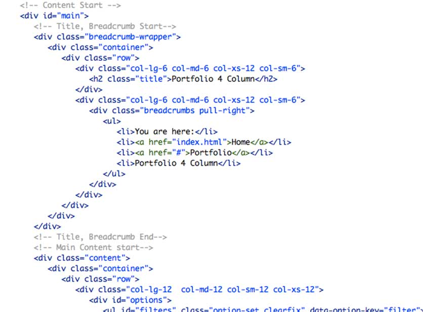

Thank you for purchasing my template. If you have any questions that are beyond the scope of this help file, please feel free to email via my user page contact form on Wrapbootstrap. Thanks so much!
This theme is a responsive layout. The header of this template is nested within a header section with an id of "header", the main content section is nested with a div of id "main". Within this section there are two sub section except the homepage. Those are the left content section of class "content". The sidebar's content is within a div with an class of "sidebar". The general template structure is the same throughout the template. Here is the general structure.

If you need more information, please visit this site: http://getbootstrap.com/css/#grid
The organization of the CSS is one of our priorities.
These are the CSS file we're using in the template:
The second file contains all of the specific stylings for the page. The file is separated into sections using:
- bootstrap.css - (Generic styles, resets & normalization) - theme-responsive.css - (Responsive grid styles) - style.css - (The basic layout structure styles) - blue.css - (Template color choice. Default is blue.css) - superfish.css - (This stylesheet is used to populate the dropdown menus)
jQuery('#tweets').tweetMachine('', {
endpoint: 'statuses/user_timeline',
user_name: 'FIFOThemes',
include_retweets: true,
exclude_replies: false,
limit: 1,
autoRefresh: false
});
To use your own twitter feed please edit "custom.js" and replace with your "user_name" in above snippet.
For Flickr feed you have to change the "id" in below snippet which you will find at "custom.js". Replace the id with yours.
$('ul#flickrfeed').jflickrfeed({
limit: 6,
qstrings: {
id: '71865026@N00'
},
itemTemplate: '<li>'+
'<a rel="prettyPhoto[pp_gal]" href="{{image}}">' +
'<img src="{{image_s}}" alt="{{title}}" />' +
'</a>' +
'</li>'
}, function(data) {
$('a[rel^="prettyPhoto"]').prettyPhoto();
});
In addition to the custom scripts, I implement a few "tried and true" plugins to create the effects. This plugin is packed, so you won't need to manually edit anything in the file. The only necessary thing to know is how to call the method. For example:
jQuery(function () {
jQuery('ul.sf-menu').stop().superfish();
});
I've included logo psd with this theme:
The template is set to use the blue skin as default. There are 10 predefined color skins. If you want to use another color you just have to include the specific css file to make it work. For example if you want to use orange color skin please do the following.
Default setting is:
<!-- Skin -->
<link rel="stylesheet" href="css/colors/blue.css">
User Defined Orange Color Setting:
<!-- Skin -->
<link rel="stylesheet" href="css/colors/orange.css">
All you have to do is to replace the css file name to "orange" from "blue".
If you want to use boxed template please use the templates from "PixmaBoxed" foler. The difference is you have to add an additional class to body tag like this.
<body class="boxed">
Pixma is loaded with a graph functionality.
To manage the graph charts you just have to change the value inside "bar-inner" div. Right now it's 50 and it means 50%.
<div class="bar-wrapper">
<div class="bar-container">
<div class="bar-background"></div>
<div class="bar-inner">50</div>
<div class="bar-foreground"></div>
</div>
</div>
Font Awesome is a @font-face iconset that you can change size and color of the icons using CSS.
If you need more information, please visit this site: http://fortawesome.github.com/Font-Awesome/
<iclass="icon-edit"></i><iclass="icon-search"></i>
This is one of the best slider plugins we have seen so far.
"Slider Revolution is a fully developed slide displaying system offering the capability to show images, videos and captions paired with simple, modern and fancy 3D transitions. On top of that, Slider Revolution is fully responsive and mobile optimized and can take on any dimensions."
More details on http://themes.themepunch.com/?theme=revolution_jq
Nivo Slider is the world’s most awesome jQuery Image Slider
For more info please visit http://dev7studios.com/nivo-slider/
Markup:
<!-- Then somewhere in the <body> section --> <div class="slider-wrapper"> <div id="slider" class="nivoSlider"> <img src="images/slide1.jpg" alt="" /> <a href="http://dev7studios.com"><img src="images/slide2.jpg" alt="" title="#htmlcaption" /></a> <img src="images/slide3.jpg" alt="" title="This is an example of a caption" /> <img src="images/slide4.jpg" alt="" /> </div> </div> <div id="htmlcaption" class="nivo-html-caption"> <strong>This</strong> is an example of a <em>HTML</em> caption with <a href="#">a link</a>. </div>
Finally you need to hook up your script using the $(window).load() function:
<script type="text/javascript"> $(window).load(function() { $('#slider').nivoSlider(); }); </script>
The filter is driven by the Isotope script - http://isotope.metafizzy.co/
Here's an example of usage:
<div id="options">
<ul id="filters" class="option-set clearfix" data-option-key="filter">
<li><a href="#filter" data-option-value="*" class="selected">All</a></li>
<li><a href="#filter" data-option-value=".web">HTML</a></li>
<li><a href="#filter" data-option-value=".wp">Wordpress</a></li>
<li><a href="#filter" data-option-value=".css">CSS</a></li>
<li><a href="#filter" data-option-value=".jquery">jQuery</a></li>
<li><a href="#filter" data-option-value=".php">PHP</a></li>
</ul>
</div>
<div class="portfolio-item">
<a href="img/portfolio/img-portfolio.jpg" class="portfolio-item-link" data-rel="prettyPhoto" >
<span class="portfolio-item-hover"></span>
<span class="fullscreen"><i class="icon-search"></i></span><img src="img/portfolio/img-portfolio.jpg" alt=" "/>
</a>
<div class="portfolio-item-title">
<a href="single-project.html">Office Workers</a>
<p>
Design / Development
</p>
</div>
<div class="clearfix"></div>
</div>
Regarding contact form as main part of Contact Us section, only thing you need to do is to setup your email address.
To do this, please open "ajax/process.php" file and change the email on this line:
// CHANGE THE BELOW VARIABLES TO YOUR NEEDS $to = 'youremailhere@gmail.com';
The template provides decent fallbacks for old browsers, such as Internet Explorer 8, – not bug free. IE8 basically doesn’t support any CSS3, except for some selectors, if you really need pixel perfect for old browsers you can try add http://css3pie.com/ on your web site.
Images: http://photodune.net/, http://dribbble.com, http://www.flickr.com/photos/markjsebastian/ (All images are licensed Under Creative Common and free to use on commercial projects.
Subtle Patterns: http://subtlepatterns.com/
Fonts:
Google Fonts - http://www.google.com/webfonts
Icons Font-face - http://fortawesome.github.com/Font-Awesome/
Scripts:
jQuery - http://www.jquery.com/
Bootstrap Framework - http://getbootstrap.com/
Revolution Slider - http://codecanyon.net/item/slider-revolution-responsive-jquery-plugin/2580848
Nivo Slider - http://dev7studios.com/nivo-slider/
Isotope Jquery plugin - http://isotope.metafizzy.co
jQuery Parallax- http://www.ianlunn.co.uk/plugins/jquery-parallax/
Sticky Plugin- http://labs.anthonygarand.com/sticky
Modernizr- http://modernizr.com/
Superfish Plugin - http://users.tpg.com.au/j_birch/plugins/superfish/
tweetMachine - https://github.com/ryangiglio/jquery-tweetMachine
tytabs - http://blog.carefordesign.com
jQuery gMap - http://github.com/marioestrada/jQuery-gMap
Once again, thank you so much for purchasing this template. As I said at the beginning, I'd be glad to help you if you have any questions relating to this template. No guarantees, but I'll do my best to assist. If you have a more general question relating to the templates on Wrapbootstrap, you might consider emailing us.
Monzurul Haque